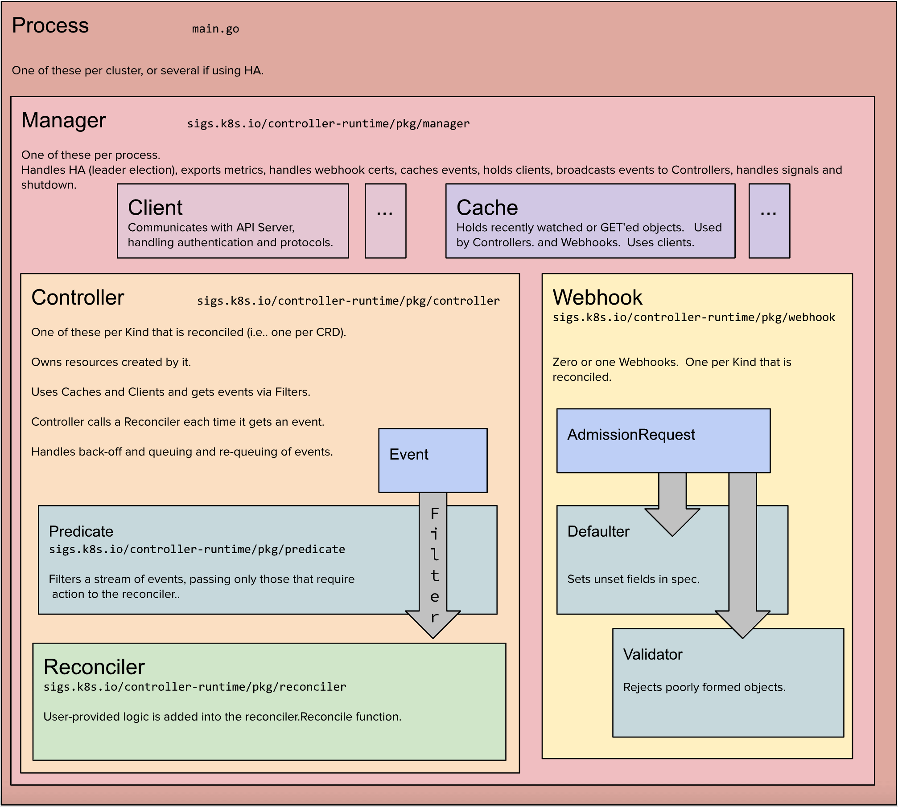

1 controller-tools1
Tip
前面sample-controller的例子,虽然用了代码生成器,但是还有蛮多东西需要一个个手动编写, 会比较麻烦, 有没有什么工具呢?
git clone https://github.com/kubernetes-sigs/controller-tools
cd controller-tools
tree -L 2
.
├── Makefile
├── boilerplate.go.txt
├── cmd # 有3个工具
│ ├── controller-gen
│ ├── helpgen
│ └── type-scaffold # scaffold 是脚手架的意思,用来生成types.go
├── go.mod
├── go.sum
├── pkg
│ ├── crd # 根据这个,大概能想到,上面的那个工具应该能自动生成crd yaml文件
│ ├── deepcopy # 同样
│ ├── genall
│ ├── loader
│ ├── markers
│ ├── rbac # 角色
│ ├── schemapatcher
│ ├── typescaffold
│ ├── version
│ └── webhook # webhook 相关
└── test.sh
# 安装工具
go install sigs.k8s.io/controller-tools/cmd/controller-gen
go install sigs.k8s.io/controller-tools/cmd/type-scaffold
点击查看执行结果: 可以看到和我们上面写的types.go一样的东西
// CronTabSpec defines the desired state of CronTab
type CronTabSpec struct {
// INSERT ADDITIONAL SPEC FIELDS -- desired state of cluster
}
// CronTabStatus defines the observed state of CronTab.
// It should always be reconstructable from the state of the cluster and/or outside world.
type CronTabStatus struct {
// INSERT ADDITIONAL STATUS FIELDS -- observed state of cluster
}
// +k8s:deepcopy-gen:interfaces=k8s.io/apimachinery/pkg/runtime.Object
// CronTab is the Schema for the crontabs API
// +k8s:openapi-gen=true
type CronTab struct {
metav1.TypeMeta `json:",inline"`
metav1.ObjectMeta `json:"metadata,omitempty"`
Spec CronTabSpec `json:"spec,omitempty"`
Status CronTabStatus `json:"status,omitempty"`
}
// +k8s:deepcopy-gen:interfaces=k8s.io/apimachinery/pkg/runtime.Object
// CronTabList contains a list of CronTab
type CronTabList struct {
metav1.TypeMeta `json:",inline"`
metav1.ListMeta `json:"metadata,omitempty"`
Items []CronTab `json:"items"`
}2 kubebuilder234
Tip
- kubebuilder 是专门用来开发operator 的脚手架工具
- 前面稍微介绍了下 controller-tools,现在介绍的kubebuilder 实际内部会也使用到了controller-tools
2.1 快速感受一下
curl -L -o kubebuilder "https://go.kubebuilder.io/dl/latest/$(go env GOOS)/$(go env GOARCH)"
chmod +x kubebuilder && mv kubebuilder /usr/local/bin/
# 直接运行命令, 会看到一些帮助
kubebuilder
mkdir crd-kubebuilder
cd crd-kubebuilder
go mod init crd-kubebuilder
# 1. 初始化,使用的v4 plugin, 会下载比较新版本的 库
kubebuilder init --domain example.com
tree -L 2
.
├── Dockerfile
├── Makefile
├── PROJECT
├── README.md
├── cmd
│ └── main.go
├── config # 一些yaml文件
│ ├── default
│ ├── manager
│ ├── prometheus
│ └── rbac
├── go.mod
├── go.sum
└── hack
└── boilerplate.go.txt
# 2. 创建api
kubebuilder create api --group stable --version v1 --kind CronTab
# y y
# 3. 编写控制器逻辑等逻辑
# 4. 生成 crd
make manifests2.2 架构介绍
